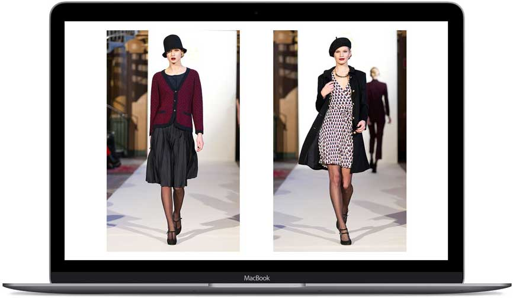
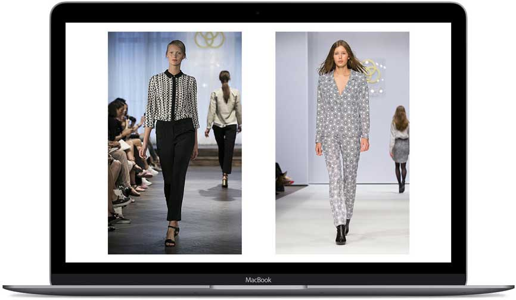
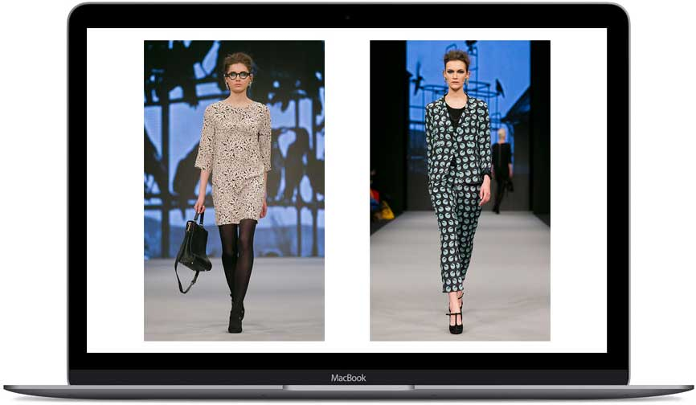
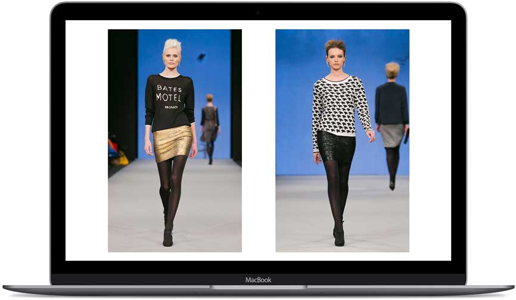

Print & Knit
P
Print Design
Part of my job as a Fashion Designer for Mayla I made print and knit design using Illustrator. Fabrics we working on were silk, cotton and silk-jaquard and wool knits.




Print Design
Part of my job as a Fashion Designer for Mayla I made print and knit design using Illustrator. Fabrics we working on were silk, cotton and silk-jaquard and wool knits.